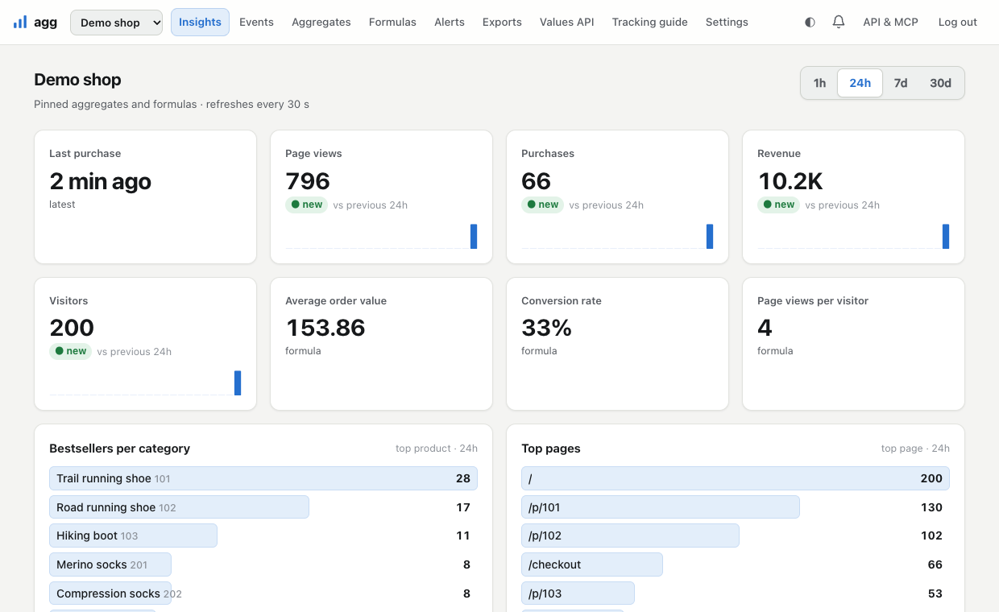

Self-hosted · one binary · SQLite
Simple analytics and product insights for your project.
Page views, visitors, top pages and referrers out of the box. Then count what matters for your product: feature usage, sign-ups per plan, bestseller per category, over sliding windows from 5 minutes to 30 days.
docker run -d -p 8080:8080 -v agg-data:/data ghcr.io/worotyns/agg:latest- 3 KB script
- No cookies
- Alerts with browser push
- Prometheus export
- MCP for AI assistants

How it works
You send events. agg keeps live numbers over sliding windows and shows them where you look.
-
Collect
A 3 KB script sends page views and your own events,
agg.track('feature_used', {…}), in batches, with retries, plus page, browser and device. Backends, cron jobs and CI send the same events with one HTTP request. -
Aggregate
Define what to compute, without code: count, sum, distinct count, last value or last time; grouped by any field; ranked inside groups. Values update as events arrive.
-
Look
A built-in UI with tiles, trends against the previous period, top lists and history. Or export to Prometheus and use Grafana.
-
Act
Alerts when something happens or stops happening: browser notifications, in-app, or a Slack / Discord webhook. A JSON API returns the values you mark public.
What you can compute
Presets for each of these are one click away when you add a site.
Websites
- page views and visitors vs the previous period
- top 10 pages today, this week, this month
- top referrers
- most read articles per section
Products and SaaS
- feature usage and users per feature
- active users in the last hour, day, week
- sign-ups per plan and per source
- sign-up rate, this week vs last week
Shops
- purchases and revenue per product
- bestseller in each category this week
- visitors viewing a product right now
- time since the last purchase, average order value
agg.track('purchase', { order_id, value,
items: [{ id, name, category, quantity }] }, order_id)
Events purchase
Explode props.items
Operation sum of item.quantity
Group by category = item.category
Rank by product = item.id
Windows 5m 1h 6h 24h 7d 30d (+ previous)GET /v1/top?site=pk_…&aggregate=bestsellers
&window=7d&category=shoes
{ "items": [
{ "key": "73", "label": "Trail shoe", "value": 41 },
{ "key": "12", "label": "Road shoe", "value": 27 }
] }Simple UI, or Grafana + Prometheus
The built-in UI covers the everyday questions: what happened in the last hour, day, week or month, compared with the period before, and what is on top.
If you already run Prometheus, create a token-protected export and scrape it. Window values are gauges, all-time counts are counters, per-product series are limited to a top K or an allowlist. A Grafana dashboard and a docker-compose file are included.
agg_value{site="shop",aggregate="purchases",
window="24h"} 123
agg_dimension_value{site="shop",aggregate="purchases",
window="24h",product="73"} 5
agg_events_total{site="shop",aggregate="purchases"} 5012
agg_formula_value{site="shop",formula="aov"} 182.4Set it up by talking to your AI assistant
agg has a built-in MCP server. Connect Claude or another assistant with a revocable token and ask it to plan your analytics: it picks a preset, tells you which events to send, checks what your site really sends, tests aggregates on real events, and creates them, with alerts, after you confirm.
The presets for websites, shops, SaaS products and blogs work without an assistant too.
claude mcp add --transport http agg \
https://agg.example.com/mcp \
--header "Authorization: Bearer agg_api_…"
> Plan analytics for my SaaS: which features
do paying users use? Alert me when
sign-ups stop.Privacy by default
- You decide what to send. As a safety net the server removes personal-data fields
(
email,phone, addresses…) from properties; you can add your own. IPs are not stored unless you turn it on. - No cookies, no fingerprinting. The optional visitor id is a random value in
localStorage, used only to count distinct visitors. - Consent-aware. It can wait for your consent banner before sending or storing anything.
- Your server, one file. Events and aggregates stay in one SQLite file. Raw events are kept 7 days by default.
- Only real numbers. Missing values are
null, never estimated.
Quick start
1Run it
The first start prints an admin token; the UI is on port 8080.
Docker
docker run -d --name agg -p 8080:8080 -v agg-data:/data ghcr.io/worotyns/agg:latest
docker logs agg # shows the admin tokenFly.io
git clone https://github.com/worotyns/agg && cd agg
# edit app and AGG_PUBLIC_URL in deploy/fly/fly.toml, then:
fly apps create agg-example
fly volumes create agg_data --size 1 --region waw -c deploy/fly/fly.toml
fly secrets set AGG_ADMIN_TOKEN=$(openssl rand -hex 24) -c deploy/fly/fly.toml
fly deploy -c deploy/fly/fly.tomlOne machine with a volume for the SQLite database; details in the README.
From source
git clone https://github.com/worotyns/agg && cd agg
go build -o agg ./cmd/agg # Go 1.27+
./agg serve # prints the admin token, UI on http://localhost:80802Add the snippet
Log in, create a site and add its snippet to your pages. Page views, visitors, top pages and referrers work right away.
<script async src="https://agg.example.com/agg.js" data-site="pk_…"></script>3Send your events
Send events from your app and pick a template (feature usage, active users, sign-ups per plan…); the tester shows what will be counted on your real recent events before you save.
agg.track('feature_used', { feature: 'export_pdf' })No browser needed: a backend, a cron job or a CI pipeline posts the same events over HTTP. An
id makes a retried webhook count once.
curl -X POST https://agg.example.com/e -H 'Content-Type: application/json' \
-d '{"site":"pk_…","events":[{"name":"invoice_paid","id":"inv-42","props":{"amount":49}}]}'More examples, limits and headers in the HTTP API docs.
What it is not
It is not a full web analytics suite: no sessions, funnels, user profiles or session replay. It does not render widgets or pop-ups on your site; it gives you the numbers and an API to build them on.
It is source-available under the Elastic License 2.0: free to use, modify and self-host, also commercially; not to be resold as a hosted service.